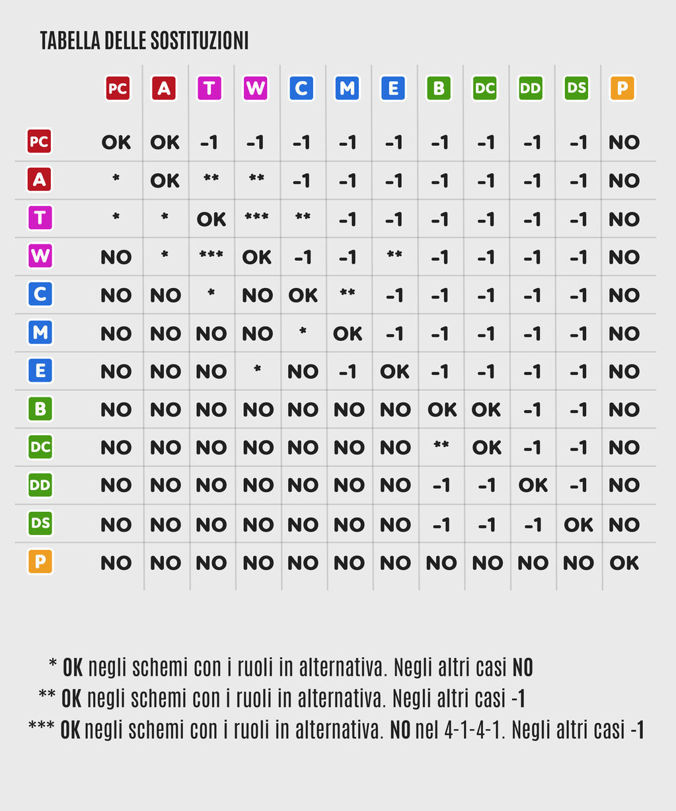
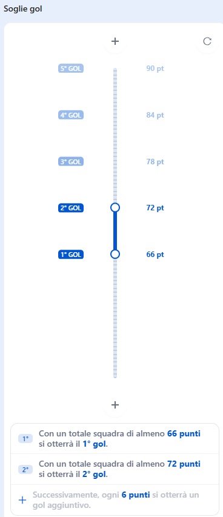

Principi generali, quota d’iscrizione e composizione delle rose.
1.1 Modifiche al regolamento
Il regolamento ufficiale è insindacabile. Ciononostante, qualsiasi regola descritta all’interno di questo regolamento è modificabile, previa proposta e successiva votazione.
Per l’accettazione di una nuova regola è necessaria l’approvazione della maggioranza, costituita da almeno la metà dei partecipanti più uno.
1.2 Quota d’iscrizione e premi
€ 100quota · lega a 12
€ 120quota · lega a 10
€ 1.200montepremi totale
1°
Campionato
€ 400
2°
Campionato
€ 250
3°
Campionato
€ 150
4°
Campionato
€ 100
PT
Classifica punti
€ 100
CI
Coppa Italia
€ 50
CL
Champions League
€ 100
EL
Europa League
€ 50
1.3 Composizione della rosa
Libertà di scelta riguardo ai ruoli, numero fisso di 26 giocatori, di cui almeno due portieri.
Nella modalità Mantra le rose sono libere: non esiste un numero esatto di giocatori che ogni squadra deve obbligatoriamente avere per ruolo. L’unico limite è che ogni rosa abbia sempre 26 giocatori, di cui 2 necessariamente portieri, in qualsiasi fase della stagione.
Capitolo 02
Calciomercato
Aste, scambi e strumenti per gestire la rosa durante la stagione.
2.1 Asta iniziale
Budget250 crediti
Prima chiamata1 credito
MetodoChiamata libera
Ogni allenatore può chiamare qualsiasi giocatore in qualsiasi momento, senza limitazioni legate al ruolo.
2.2 Asta di riparazione
● Modalità da definire
2.3 Scambi tra allenatori
Considerando la natura della formula Mantra, lo scambio di giocatori tra allenatori è sempre possibile fino alla settimana successiva alla fine di ogni periodo di mercato o durante le pause per la nazionale.
Negli scambi è consentito includere crediti residui per bilanciare un’offerta.
2.4 Giocatori infortunati o ceduti all’estero
Se un giocatore in rosa subisce un infortunio che lo terrà lontano dai campi per più di due mesi, o viene ceduto all’estero, può essere sostituito da uno svincolato dello stesso ruolo classico (D, C, A, P) e con quotazione pari o inferiore.
2.5 Mercato a gettoni
Al di fuori delle sessioni ordinarie, ogni fantallenatore può acquistare temporaneamente uno svincolato usando un gettone. Il calciatore resta disponibile solo per il turno di gioco successivo e poi torna automaticamente tra gli svincolati.
Costo del gettone5 crediti
Limite sul calciatore1 volta a stagione
Non c’è limite al numero totale di giocatori ingaggiabili. I calciatori già presenti in Serie A all’inizio della stagione sono disponibili all’apertura del mercato a gettone. I nuovi arrivi vengono attivati solo dopo la chiusura ufficiale della rispettiva finestra di mercato, nel giorno dell’aggiornamento delle quotazioni e dell’apertura del mercato.
Capitolo 03
La formazione
Consegna, moduli, giocatori fuori posizione e sostituzioni.
3.1 Inserimento della formazione
In mancanza, la squadra gioca con l’ultima formazione inserita. Se non è reperibile una formazione precedente, la squadra totalizza automaticamente 0 gol (0 fantapunti). Dopo un’asta di riparazione, eventuali giocatori non più in rosa prendono s.v. e vengono sostituiti normalmente.
In caso di malfunzionamento del sito o impossibilità di accedere a internet, la formazione può essere comunicata nel gruppo WhatsApp o tramite SMS all’admin, sempre entro lo stesso limite.
Si sceglie prima uno degli 11 moduli disponibili, poi i titolari e 12 riserve.
Gli 11 moduli disponibili
3.2 Ruoli e malus dei giocatori fuori posizione
Un giocatore schierato fuori posizione rispetto al modulo comporta un malus al punteggio finale pari a −1. Non tutti i ruoli possono essere adattati.

Tabella delle sostituzioni
3.3 Sostituzioni
5sostituzioni massime
12riserve schierabili
Tra le riserve deve esserci almeno un portiere. La panchina va ordinata per preferenza assoluta, dal calciatore che si desidera far entrare per primo, se il cambio è tatticamente possibile.
La modalità di sostituzione è EASY e procede in quest’ordine:
Soluzioni ottimaliRispettano lo schema tattico scelto, senza calciatori fuori posizione e senza malus.
Soluzioni adattateSolo se non esistono soluzioni ottimali: applicano, ove possibile, uno o più malus mantenendo il modulo scelto.
Capitolo 04
Calcolo dei punteggi
Bonus, malus, modificatori e regole per determinare il risultato.
4.1 Bonus e malus
La fonte per i voti e i cartellini è Fantacalcio.it (voti Italia).
Tabella bonus e malus
4.2 Fattore difensivo
Attribuisce un malus alla squadra avversaria in base alla media voto, senza bonus o malus, del reparto difensivo. Il reparto comprende il portiere e i 5 uomini più arretrati del modulo (Dc, B, Dd, Ds, E, M).
Se i difensori sono più di 5, si considerano i 5 voti migliori, di cui almeno 3 tra Dc, B, Dd e Ds. Il fattore non si applica se il numero di calciatori è insufficiente. I 6 politici e gli s.v. con ammonizione sono voti validi; le riserve d’ufficio non vengono conteggiate.
Impostazioni del fattore difensivo
4.3 Il capitano
Alla consegna della formazione vanno indicati un capitano e un vice-capitano. A ogni partita si applica al totale un bonus basato sul voto netto, non sul fantavoto, del capitano o, in sua assenza, del vice.
Bonus capitanovoto − 6
Se né il capitano né il vice prendono voto, il bonus non viene applicato.
Bonus e malus del capitano
4.4 Soglie gol
66punti per il primo gol+6punti per ogni gol successivo

Soglie gol
4.5 Rinvio delle partite e 6 politico
Se le partite rinviate vengono giocate prima del turno successivo ed entro un mese dalla data di calendario, il conteggio viene sospeso e si attendono i voti. In caso contrario si assegna il 6 politico.
4.6 Supplementari e rigori
Tempi supplementari
I gol si basano sulla fantamedia dei migliori 4 panchinari non subentrati. La fantamedia è la media aritmetica dei voti comprensivi di bonus e malus. I portieri in panchina non vengono considerati.
Gol in trasferta
Non considerato.
Calci di rigore
In caso di parità dopo i supplementari, ogni squadra calcia una serie iniziale di 5 rigori; poi si procede a oltranza, un rigore per squadra.
Il rigore è segnato con voto netto maggiore o uguale a 6; sotto il 6 è sbagliato.
L’ordine automatico parte dall’attacco e procede verso centrocampo e difesa; all’interno di ogni linea va da destra a sinistra nello schieramento (dal basso verso l’alto nelle app).
Seguono le riserve subentrate con voto valido, secondo l’ordine di panchina.
I rigori mancanti, se non ci sono abbastanza giocatori con voto valido, sono considerati sbagliati.
Dopo una serie completa ancora in parità, la soglia viene alzata da 6 a 6,5.